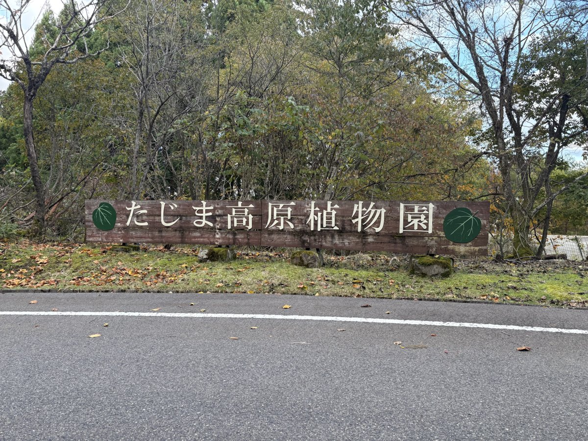

入口の看板

但馬高原植物園
兵庫県美方郡香美町村岡区和池709
駐車場
あり（無料）
トイレ
あり
ドッグラン
あり（有料） / イベント広場の有料ドッグラン。前日までの予約で1組貸切（2時間3,500円＋犬1匹300円）、予約の無い日は一般開放（使用料とペット入園料を合わせて犬1匹600円）。大きさを問わず利用可。過去1年以内の狂犬病・混合ワクチン接種が条件で、ヒート中・体調の悪い犬は利用不可。リードはエリアに入って出入口を閉めてから外す。
入場料
有料（大人520円・高校生420円・小中学生100円。犬は1匹300円（大きさを問わず一律）。駐車場は無料）
公式HP
tajima-garden.jp
掲載時点の料金です。最新の料金は公式サイトでご確認ください。
備考・犬連れでのポイント
瀞川平の高原に開かれた自然植物園。標高約680mの敷地のうち7haを公開し、自生植物約2,000種のほか、樹齢1,000年といわれる天然記念物の和池の大カツラと、そのそばに湧く千年水が見どころ。
犬は入園料1匹300円（大きさを問わず一律）で一緒に入園でき、園内の散策路をリード着用で歩ける。
リードは短く持ち、フンは持ち帰りが決まり。屋内レストランには犬は入れないが、屋内アトリウムと受付には入れる。
イベント広場に有料ドッグランがあり、前日までの予約で1組貸切（2時間3,500円＋犬1匹300円）、予約の無い日は一般開放（使用料とペット入園料を合わせて犬1匹600円）。
ドッグランは過去1年以内の狂犬病・混合ワクチン接種が条件で、ヒート中は利用不可。
入園料は大人520円・高校生420円・小中学生100円。開園は4月〜11月で、期間中は無休の9:00〜17:00。
冬季（12月〜3月）は休園。無料駐車場とトイレあり。秋は園内の森の紅葉が見頃。
最新情報は公式サイトで確認のこと。